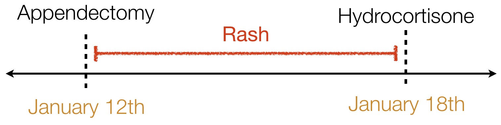
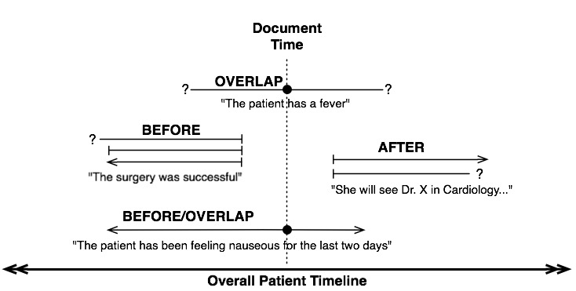
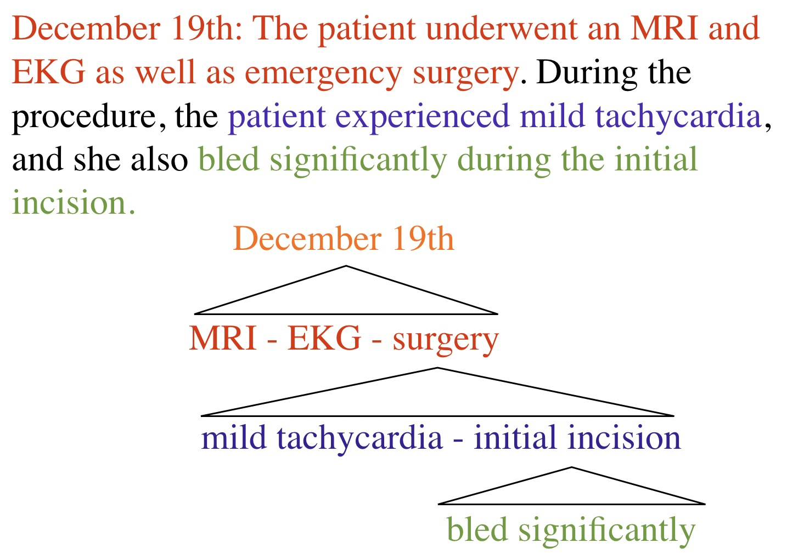
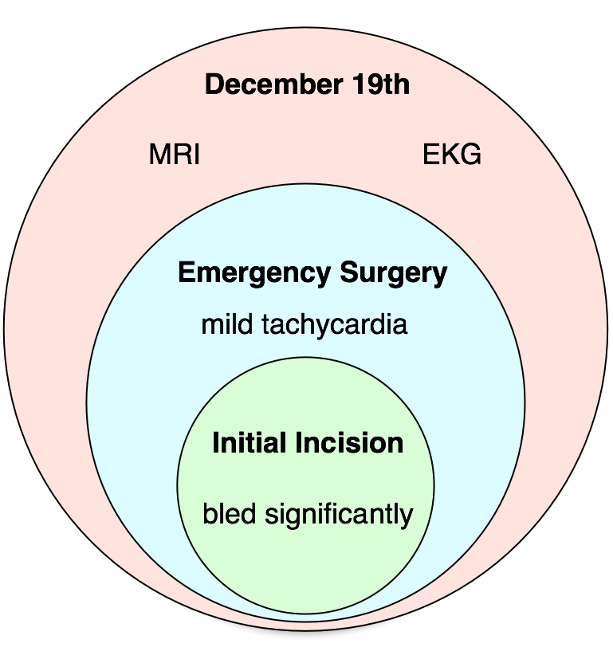
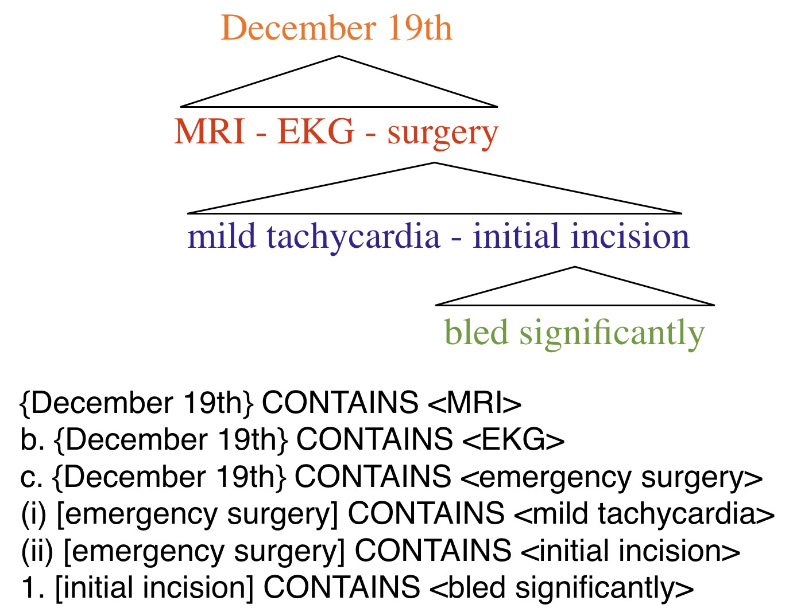
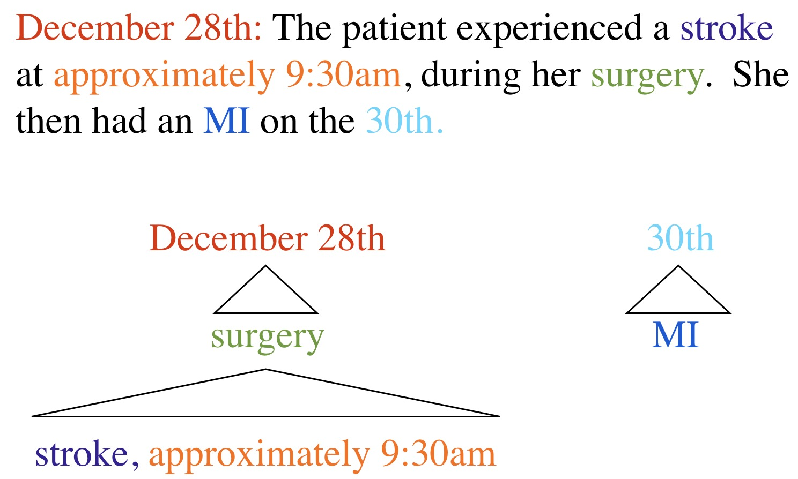
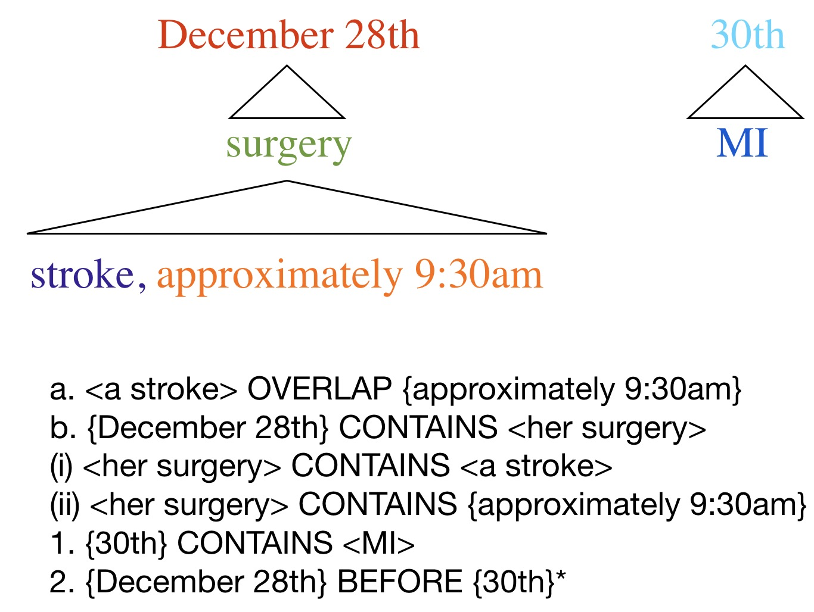

### It's grade change and exception request season - Please check out my guide to grade change and exception requests before sending one! - <https://wstyler.ucsd.edu/gradechanges/> - Good requests are *always* welcome, but problematic requests burn bridges, show poor integrity, and work against you - Please, don't be that student. --- # Representing Complex Meaning: An Eventful Case Study ### Will Styler - LIGN 6 --- ### So far, we've focused on word-based meaning - Yet there are some kinds of meaning that aren't lexical - ... but we still want to train computers to learn them --- ### The question, always, is training data - We can't just say "Hey, Neural network: Learn how events work" - We need to give the computer the kind of data it is supposed to generate - This involves *annotation* - Today, we'll look at a case study! --- ### Today's Plan - Richer Event Descriptions using RED --- # The RED (Richer EVENT Description) Project --- ### Lots of folks want to know about events --- ### Lots of folks want to know about events --- ### Lots of folks want to know about events --- ### Lots of folks want to know about events <img class="r-stretch" src="img/doctor.jpg"> --- ### Lots of folks want to know about events <img class="r-stretch" src="img/lawyer.jpg"> --- ### Annotation needs to find things that are important. - Different people think different things are important. --- ### Let's think about one use case --- - > "Federal Authorities say a Malaysian Businessman nicknamed Fat Leonard obtained U.S. military secrets in 2009. He lined up hookers, Lady Gaga tickets and other bribes for a commander." --- ### "Uh... yeah. I'm interested in this." --- ### What kind of information do they want to know? --- ### Who's Fat Leonard? - > "Federal Authorities say <clr>a Malaysian Businessman</clr> nicknamed <clr>Fat Leonard</clr> obtained U.S. military secrets in 2009. <clr>He</clr> lined up hookers, Lady Gaga tickets and other bribes for a commander." - <clr>A Malaysian Businessman</clr> == <clr>Fat Leonard</clr> == <clr>He</clr> - This is called 'Anaphora' or 'Coreference' --- ### What did he do? - > "Federal Authorities say a Malaysian Businessman nicknamed Fat Leonard <clb>obtained</clb> U.S. military secrets in 2009. He lined up hookers, Lady Gaga tickets and other bribes for a commander." - He <clb>obtained</clb> U.S. military secrets (an EVENT) --- ### When? - > "Federal Authorities say a Malaysian Businessman nicknamed Fat Leonard <clb>obtained</clb> U.S. military secrets in <clo>2009</clo>. He lined up hookers, Lady Gaga tickets and other bribes for a commander." - <clo>2009</clo> CONTAINS <clb>obtained</clb> - This is a temporal relation --- ### How did that happen? - > "Federal Authorities say a Malaysian Businessman nicknamed Fat Leonard <clb>obtained</clb> U.S. military secrets in 2009. He <clb>lined up</clb> hookers, Lady Gaga tickets and other bribes for a commander." - <clb>lined up</clb> CAUSES <clb>obtained</clb> - This is a causal relation --- ### According to who? - > "<clr>Federal Authorities</clr> say a Malaysian Businessman nicknamed Fat Leonard <clb>obtained</clb> U.S. military secrets in 2009. He <clb>lined up</clb> hookers, Lady Gaga tickets and other bribes for a commander." - <clr>Federal Authorities</clr> REPORTING <clb>lined up</clb>, <clb>obtained</clb> - This is an Epistemic relation --- - **"Thanks."** - [*droning intensifies*] --- ### ... but other people need events too! --- <img class="r-stretch" src="img/doctor.jpg"> ### "I have 30 seconds to learn and understand this patient's entire medical history" --- > “She was admitted for an appendectomy on January 12th. She had a rash after surgery, which we successfully treated with hydrocortisone on the 18th.” -  --- <img class="r-stretch" src="img/doctor.jpg"> ### "How can we focus on more effective treatments?" --- ### Event Questions for Medicine - "Which treatments most often result in no cancer within six months?" - "How many patients report a change in pain level after hysterectomy for endometriosis?" - "What disorders are most likely to occur within six months of starting Adderall?" - "Are there any new symptoms or disorders which occur more often than chance following administration of the COVID-19 vaccine?" --- <img class="r-stretch" src="img/lawyer.jpg"> ### "I want to sue somebody with lots of money!" --- ### Event Questions for Medical Law - "Was there a spike in cancer cases in 2012 following Fukushima?" - "Find all cases where the patient took Vioxx for at least a year before they had a heart attack or stroke" - "In what percentage of cases does a patient report facial numbness after this plastic surgery technique?" --- ### So, to keep both Doctors, Lawyers, and Spies happy, we need to build a system which finds... - 1: EVENTs and Entities - 2: Temporal Expressions - 3: Temporal Relations - 4: Causal Relations - 5: Reporting Relations - 6: Coreference relations --- ### ... but in order to build the system, we need to create the training data - This means annotation! --- ## How do you make a good annotation schema? --- ### A good annotation schema has a few things going for it - Humans can apply it consistently and uniformly - Each markable item must have only one possible "answer" - Each markable must have at least one answer which fits --- ### Bad Annotation schemas have many possible answers --- ### UMLS ~2009 > “Her appendicitis caused acute peritonitis” - appendicitis CAUSES peritonitis - appendicitis BRINGS_ABOUT peritonitis - appendicitis PRODUCES peritonitis - appendicitis PRECEDES peritonitis - peritonitis RESULT_OF appendicitis - peritonitis FUNCT_RELATED_TO appendicitis - peritonitis SECONDARY_TO appendicitis --- <img class="r-stretch" src="humorimg/howaboutno.jpg"> --- ### Will being in idiot in 2011 > “The bombing followed an attack in Basra” - bombing AFTER attack - attack BEFORE bombing --- ### When creating annotation schemas, you should capture everything necessary, and delineate clearly --- ## How RED works <clb>EVENT</clb> - Something which makes sense on a timeline and has a temporal nature. <clo>TIMEX</clo> - Words or phrases which link to a timeline <clr>ENTITY</clr> - Something else - Then, mark the *relations* between these things. --- ### Step 1: <clb>EVENT</clb> and <clr>ENTITY</clr> annotation > “<clr>She</clr> was <clb>admitted</clb> for an <clb>appendectomy</clb> on January 12th. <clr>She</clr> had a <clb>rash</clb> after <clb>surgery</clb>, which <clr>we</clr> successfully <clb>treated</clb> with <clb>hydrocortisone</clb> on the 18th.” --- ## Complication! --- ### Is “Sudafed” an EVENT in... - “The white supremacists stole Sudafed to fund their terrorist dinner parties” - “Sudafed resolved her cold on March 15th.” - “Tainted Sudafed has caused 2 deaths so far.” --- ### We need to say more about these events! --- ### Step 1.5: <clb>EVENT</clb> properties - DocTimeRel - When did it happen relative to the writing? - Type - Is it evidential? Aspectual? - Polarity - Positive or Negative? - Modality - Did it actually happen? - Aspect - Was it constant or intermittent? - Representation - Was it explicitly mentioned, or implied? --- ### DocTimeRel  --- ### Modality - ACTUAL - It happened - UNCERTAIN/HEDGED - It maybe happened - HYPOTHETICAL - It could happen - GENERIC - It's a thing that happens, but this isn't a specific one --- ## Complication! --- ### What’s the modality of “pneumonia” in: - “She has pneumonia” - “She may develop pneumonia” - “Pneumonia is particularly deadly to the elderly” - “Her chest sounds are not inconsistent with pneumonia” - “The X-Ray is strongly suspicious for pneumonia, but not conclusive” --- ### What’s the modality of “bombing” in: - “The general stated that bombing the compound overnight “was still an option”” - “With the advent of newer technologies, bombings are deadlier than ever.” - “He came home after allegedly poaching Cassowaries.” - “We will conduct a bombing at 0300” - “We may conduct a bombing at 0300” --- ### OK, we know what the events are, but *when did they happen?* --- ### Step 2: Temporal Expression (<clo>TIMEX</clo>) annotation > “<clr>She</clr> was <clb>admitted</clb> for an <clb>appendectomy</clb> on <clo>January 12th</clo>. <clr>She</clr> had a <clb>rash</clb> after <clb>surgery</clb>, which <clr>we</clr> successfully <clb>treated</clb> with <clb>hydrocortisone</clb> on <clo>the 18th</clo>.” --- ### TIMEX Types: - DATE (January 13th, Last Week, Lately) - TIME (5 minutes from now, 6:45) - DURATION (For 20 minutes, Since last week) - QUANTIFIER (Twice, Eight times) - SET (Twice a week, BID) - PREPOSTEXP (“Preoperative”, “Post-partum”) --- ## Complication! --- ### What times do the following <clo>TIMEX</clo>s represent? - “The bombing occurred <clo>2/13/12 at 2am</clo>” - “<clo>Next Tuesday</clo>, she’ll come in for a follow-up” - “She’s been having trouble sleeping <clo>lately</clo>.” - “She should expect soreness <clo>postoperatively</clo>.” - “<clo>Post-9/11</clo> security theater has robbed us of many civil liberties” --- ### This is called 'Temporal Expression Normalization' - It's yet another hard task! --- ### Step 3: Temporal Relation (TLINK) Annotation - BEFORE - OVERLAP - CONTAINS - BEGINS_ON - ENDS_ON - SIMULTANEOUS --- > “<clr>She</clr> was <clb>admitted</clb> for an <clb>appendectomy</clb> on <clo>January 12th</clo>. <clr>She</clr> had a <clb>rash</clb> after <clb>surgery</clb>, which <clr>we</clr> successfully <clb>treated</clb> with <clb>hydrocortisone</clb> on <clo>the 18th</clo>.” - <clb>admitted</clb> BEFORE <clb>appendectomy</clb> - <clo>January 12th</clo> CONTAINS <clb>appendectomy</clb> - <clo>January 12th</clo> CONTAINS <clb>admitted</clb> - <clb>rash</clb> BEGINS_ON <clb>surgery</clb> - <clb>rash</clb> ENDS_ON <clb>treated</clb> - <clb>treated</clb> OVERLAP <clb>hydrocortisone</clb> - <clo>the 18th</clo> CONTAINS <clb>treated</clb> --- ## Complication! --- > “The patient developed a mild post-surgical rash, which was treated with hydrocortisone at the follow-up, many years after Napoleon's exile to Elba.” <img src="naturallanguagedataimg/napoleonhydro.png"> - <clb>Napoleon's exile to Elba</clb> BEFORE <clb>hydrocortisone</clb> --- ### Every event in the history of the universe is temporally related to every other event in this history of the universe. - That's a lot of relations --- --- ### The Solution: Narrative Containers! - Don’t mark the relations between EVENTs. - Instead, put EVENTs in temporal buckets and relate the buckets <img class="wide" src="comp/buckets.jpg"> --- --- > December 19th: The patient underwent an MRI and EKG as well as emergency surgery. During the procedure, the patient experienced mild tachycardia, and she also bled significantly during the initial incision. ---  ---  ---  --- ### Done! --- > December 28th: The patient experienced a stroke at approximately 9:30am, during her surgery. She then had an MI on the 30th. ---  ---  --- ### The 4 Commandments of TLINKs - 1) TLINK all EVENTs to their narrative containers - 2) TLINK all explicitly stated temporal relations - 3) Try to only link EVENTs and TIMEX3s within the same sentence - 4) Don’t link things that happened to things that didn't --- ### Step 4: Causal Relations Annotation > “<clr>She</clr> was <clb>admitted</clb> for an <clb>appendectomy</clb> on <clo>January 12th</clo>. <clr>She</clr> had a <clb>rash</clb> after <clb>surgery</clb>, which <clr>we</clr> successfully <clb>treated</clb> with <clb>hydrocortisone</clb> on <clo>the 18th</clo>.” -<clb>appendectomy</clb> CAUSES <clb>admitted</clb> --- ## Complication! --- ### What’s a cause? - “She pulled the trigger, firing the gun and killing the T-Rex.” - “The general ordered the pilot to drop a bomb on the village” - “She pours sugar into her Mountain Dew. She’s now diabetic.” - “The rockfall destroyed the overfull dam” - “The over-filling destroyed the rockfall-damaged dam” --- ### Our solution: Causes, and Preconditions - “She pulled the trigger, firing the gun and killing the T-Rex.” - “The general ordered the pilot to drop a bomb on the village” - “She pours sugar into her Mountain Dew. She’s now diabetic.” - “The rockfall destroyed the overfull dam” - “The over-filling destroyed the rockfall-damaged dam” --- ### It gets complicated - “Her shot killed the T-Rex” - “She fired the gun, killing the T-Rex.” - “She pulled the trigger, firing the gun and killing the T-Rex.” - “She pulled the trigger, disengaging the safeties and releasing the hammer which collided with the firing pin, hitting the primer and firing the bullet whose strike killed the T-Rex.” --- ### Step 5: Reporting Annotation > "<clr>Federal Authorities</clr> say a Malaysian Businessman nicknamed Fat Leonard <clb>obtained</clb> U.S. military secrets in 2009. He <clb>lined up</clb> hookers, Lady Gaga tickets and other bribes for a commander." <clr>Federal Authorities</clr> REPORTING <clb>lined up</clb>, <clb>obtained</clb> --- ## No complication! --- ### Step 6: Coreference > “<clr>She</clr> was <clb>admitted</clb> for an <clb>appendectomy</clb> on <clo>January 12th</clo>. <clr>She</clr> had a <clb>rash</clb> after <clb>surgery</clb>, which <clr>we</clr> successfully <clb>treated</clb> with <clb>hydrocortisone</clb> on <clo>the 18th</clo>.” - <clr>She</clr> == <clr>She</clr> - <clb>surgery</clb> == <clb>appendectomy</clb> --- ## Complication! --- ### Coreference is difficult - “The Bay Harbor Butcher is off the streets, as Dexter Morgan, the alleged killer, was arrested by police over the weekend” - “Bill Clinton was the President of the United States in 1999. Now Joe Biden is POTUS.” --- ## ... but once we figure it out, we *really* understand events - "What happened?" - "When?" - "What could have happened, but didn't?" - "What caused it?" - "Says who!" --- ### ... and you just have to teach a computer how to do it - Easy! - (It was not easy) --- ### Wrapping up - Events are complicated - Time is complicated - Temporal Relations? Complicated. - Causality is crazy complicated. - Coreference? You guessed it. Complicated. --- ### For Next Time - Computational Pragmatics --- <huge>Thank you!</huge>